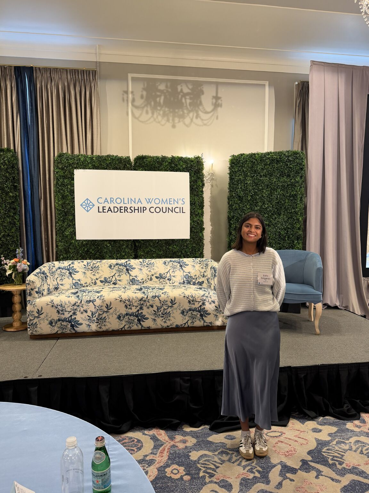
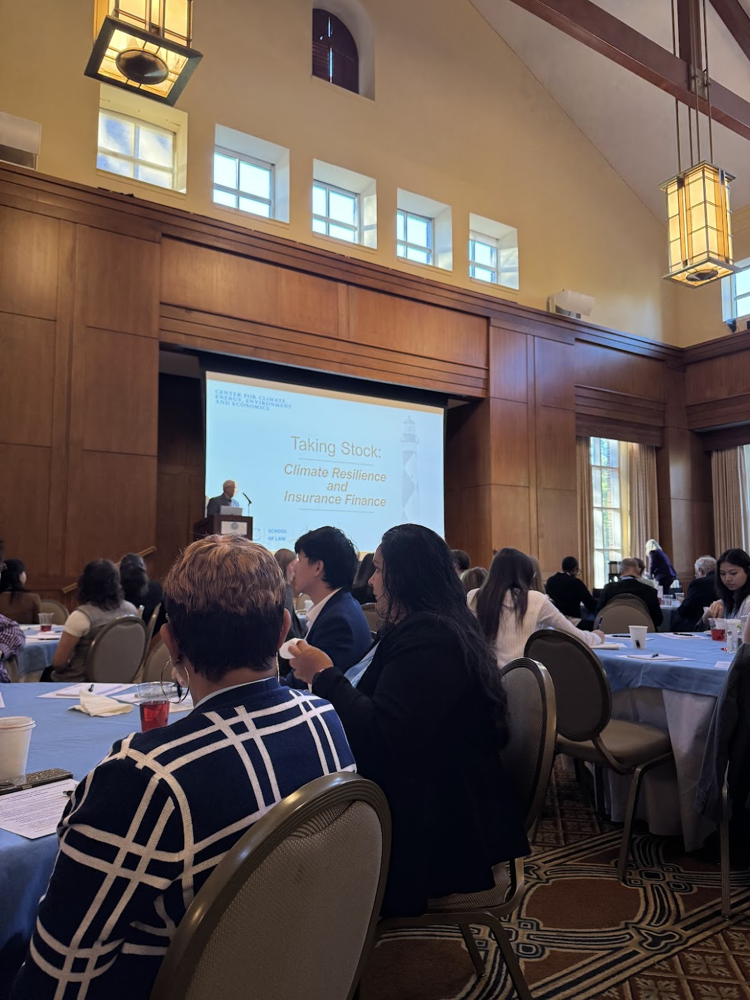
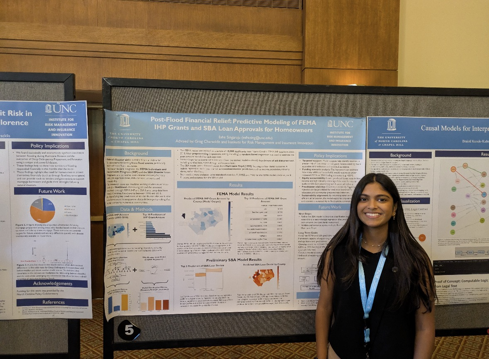
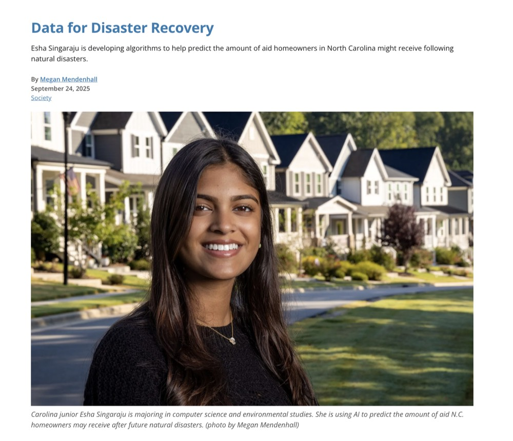
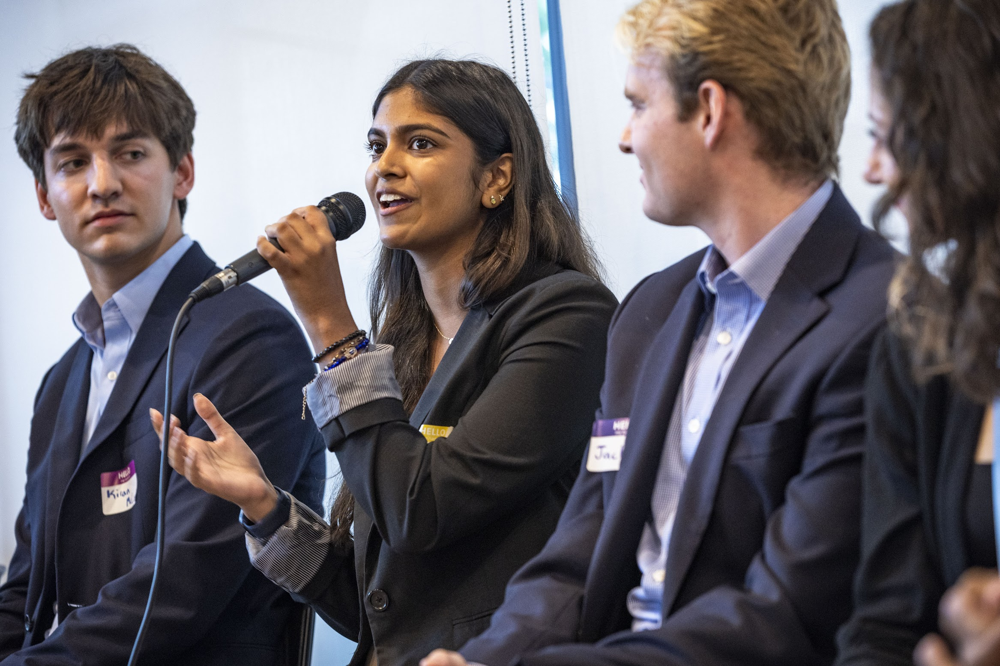
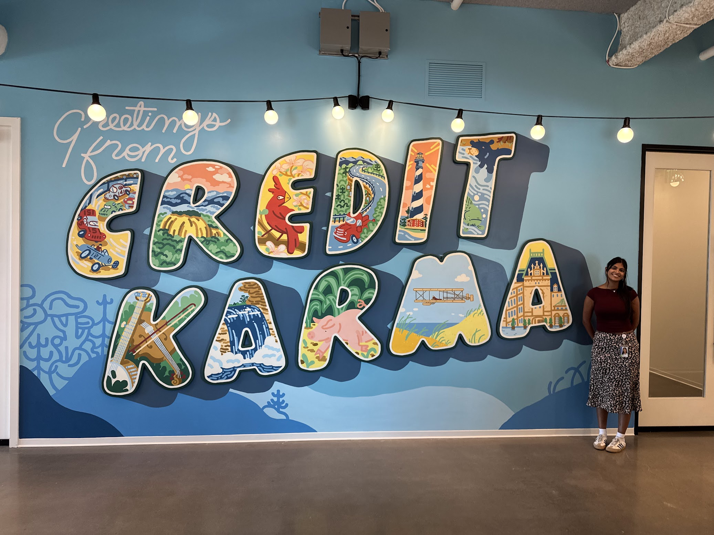
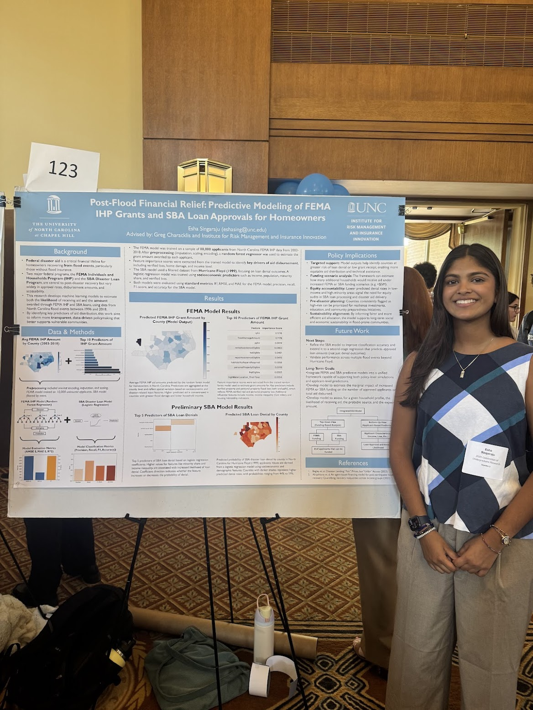
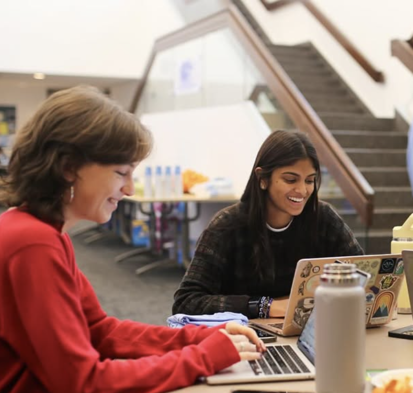

Carolina Women's Leadership Council
Invited to give a 15-minute talk on my research and undergraduate experience at UNC.

Invited to give a 15-minute talk on my research and undergraduate experience at UNC.

Invited as one of 15 undergraduate students to attend and participate in the inaugural conference sponsored by Dr. Donald Hornstein.

Presented my research at the inaugural IRMII conference to policymakers, researchers, industry leaders, and insurance professionals.

My research with IRMII was featured in the September issue of UNC Research.

Served as a panelist helping companies shape stronger internship and new grad programs for students interested in climate risk.

Had an incredible time at CK, surrounded by a wonderful team of engineers, thoughtful early talent program managers, and a supportive intern cohort.

Presented my first research results and insights at the 2025 symposium to a broader audience at UNC.

Competed in the Carolina Data Challenge in the natural sciences track and gained valuable experience in computational data analysis.